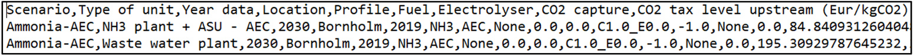
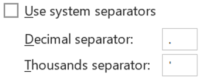
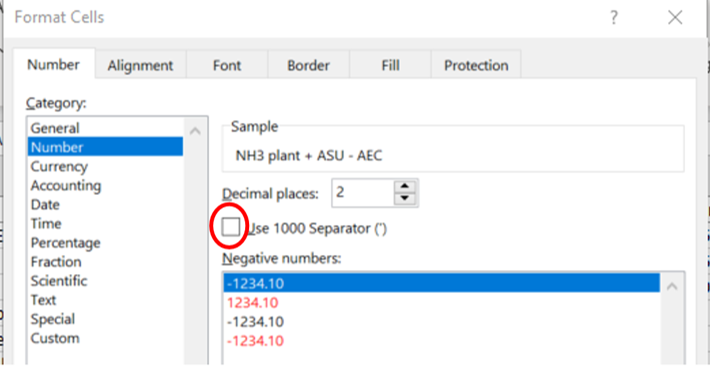
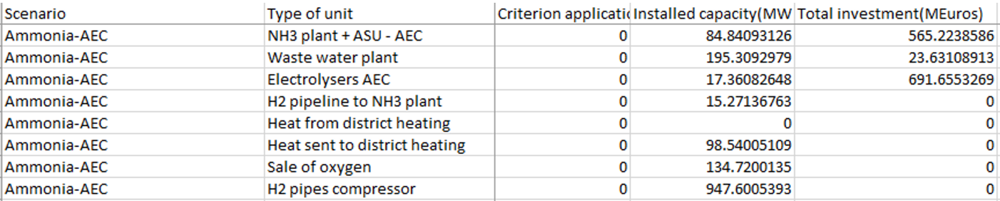

Troubleshooting
Common Errors and Solutions
ERROR: Package X not found
Likely cause: Environment not activated before running code, or package not installed, or package not called in code.
Solution:
- In Julia REPL, enter package manager with "]", then type "activate env"
 Figure 38: Example of calling packages at the beginning of the code and env/package manager usage
Figure 38: Example of calling packages at the beginning of the code and env/package manager usage
- Check installed packages with "status" (inside the activated env)
Figure 39: Package manager usage and environment status
If missing, install with "add PACKAGE_NAME"
Ensure the code calls the necessary packages at the beginning (the slide shows an example in figures above)
ERROR: File not found "no such file or directory"
Likely cause: Incorrect paths/routing between Julia scripts and Excel sheets to Main.jl.
Solution:
Verify all file and folder paths in Main.jl are correctly set (solver line, directories lines 22–25, scenario sheet name if changed).
 Figure 40: Path/routing examples for files and directories in Main.jl
Figure 40: Path/routing examples for files and directories in Main.jl
Pay extra attention when you have many folders/subfolders:
 Figure 41: Path/routing examples for directories and Excel
Figure 41: Path/routing examples for directories and Excel
ERROR: Format error when displaying the simulation results in Excel
Symptom: After importing "main results" CSV, results appear unrealistic/too large due to CSV parsing.
 Figure 42: Example of unrealistic imported results due to CSV parsing settings
Figure 42: Example of unrealistic imported results due to CSV parsing settings
Diagnosis:
Open a CSV from "Main results" in a text editor/notebook: the CSV uses commas to separate cells and dots for decimals:

Figure 43: CSV content showing comma-separated cells and dot decimalsSolution (Excel settings):
- File → Options → Advanced → Set "Decimal separator" to dot (.) and, if possible, set thousands separator to none or a symbol other than dot (e.g., apostrophe ')

Figure 44: Excel Advanced options (decimal/thousands separators)- Home → Number (open the Number format dialog; bottom-right of the Number group) → untick "Use 1000 separator"
 Figure 45: Excel Number format settings ("Use 1000 separator")
Figure 45: Excel Number format settings ("Use 1000 separator")

Figure 46: Additional Number format options- Restart Excel and re-import data. Results should now be correct:

Figure 47: Corrected results after fixing Excel settingsInstallation Problems
- Julia or VS Code not recognized: Ensure "Add to PATH" options were ticked during installation (Julia PATH guidance and VS Code's "Add to PATH (requires shell restart)")
- Gurobi license issues: Ensure you ran "grbgetkey" in Command Prompt and saved license to default location
Runtime Issues
- Packages not found: Activate env, verify with status, add missing packages, and ensure "using ..." statements are present in code
- File path errors: Double-check absolute/relative paths in Main.jl for OptiPlant directory, input Excel file/sheet names, and results folder name
Performance Tips
- HiGHS is recommended (open-source) and typical solve time is below 5 minutes on a personal computer (as stated)
- Keep scenario scope and data consistent to avoid unnecessary reruns due to path/name mismatches
FAQ Items
Common questions presented:
- Package not found
- File not found/no such file or directory
- Format error when displaying results in Excel
Final Notes
Important Warnings or Considerations
- For installation errors, check official installation guides of each program
- For OptiPlant tool issues, refer to this Troubleshooting section
- If encountering errors not mentioned, use internet forums or other tools (such as AI) to tackle them
- In last resort, you may contact one of the authors of the model
Best Practices
- Keep a copy of standard Inputs to revert changes (especially Selected_units)
- Carefully maintain consistent names across Excel sheets (ScenariosToRun, etc.) and Main.jl references
- Activate the Julia environment each session; use "status" to verify packages
- Refresh Excel Pivot Tables after importing new results
Limitations
- Linear deterministic model with perfect foresight
- Documentation indicates the model aims at minimizing fuel production cost, constrained by annual fuel demand and unit operational limits
Additional Resources
- GitHub repo (tool and documentation, including this guide): https://github.com/njbca/OptiPlant (download via "Code → Download ZIP")
- Julia: https://julialang.org/
- VS Code: https://code.visualstudio.com/
- JuMP: https://jump.dev/JuMP.jl/stable/
- HiGHS: https://highs.dev/
- Gurobi: https://www.gurobi.com/
- Scientific article: https://www.sciencedirect.com/science/article/pii/S1364032122009388